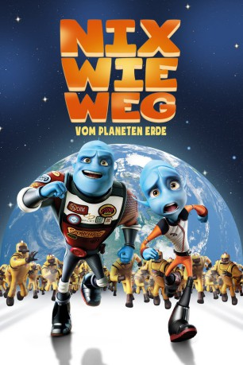

Alternativ: Escape from Planet Earth
 
 IMDB-Wertung: 5.9 / 10
IMDB-Wertung: 5.9 / 10  Metascore:
Metascore: 
Auf dem Planeten Baab ist der Astronaut Scorch Supernova ein gefeierter Held. Bei seinen waghalsigen Abenteuern steht ihm sein Bruder Gary zur Seite, der sich jedoch lieber an die Vorschriften hält, als sich Hals über Kopf in die Gefahr zu stürzen. Als von einem fernen Planeten SOS-Zeichen gesendet werden, zögert Scorch keine Sekunde - und tappt direkt in die Falle seines Widersachers Shanker. Jetzt bleibt Gary nichts anderes übrig, als selbst aktiv zu werden.
Jahr: 2013
Dauer: 89 Minuten
FSK: 0
Land: USA Studio: Weinstein Company, TheTonspuren: DTS - ,
Untertitel:
Auflösung: 1080p (1920x824) Größe: 4085 MB
Genre: Sci-Fi, Komödie, Abenteuer, Animation/Trick, Familie
Regisseur: Cal Brunker
Drehbuch: Bob Barlen, Cal Brunker, Stephen Fry, David Javerbaum, Dan Mazer
Soundtrack: Aaron Zigman
Darsteller:
 Brendan Fraser als Scorch Supernova
Brendan Fraser als Scorch Supernova Rob Corddry als Gary Supernova
Rob Corddry als Gary Supernova Ricky Gervais als Mr. James Bing
Ricky Gervais als Mr. James Bing Jessica Alba als Lena Thackleman
Jessica Alba als Lena Thackleman Sofía Vergara als Gabby Babblebrock
Sofía Vergara als Gabby Babblebrock Paul Scheer als Cameraman
Paul Scheer als Cameraman Sarah Jessica Parker als Kira Supernova
Sarah Jessica Parker als Kira Supernova Trevor Devall als Hazmat
Trevor Devall als Hazmat Brian Dobson als Hazmat
Brian Dobson als Hazmat Brad Dryborough als Hazmat
Brad Dryborough als Hazmat Kirby Morrow als Hazmat / Baabian Citizen
Kirby Morrow als Hazmat / Baabian Citizen William Shatner als General Shanker
William Shatner als General Shanker Kaitlin Olson als 3D Movie Girl
Kaitlin Olson als 3D Movie Girl Bob Bergen als 3D Movie Guy
Bob Bergen als 3D Movie Guy Jim Ward als Grey 1
Jim Ward als Grey 1 Steve Zahn als Hawk
Steve Zahn als Hawk Chris Parnell als Hammer
Chris Parnell als Hammer Daran Norris als Orientation Film Host
Daran Norris als Orientation Film Host George Lopez als Thurman
George Lopez als Thurman Craig Robinson als Doc
Craig Robinson als Doc Jane Lynch als Io
Jane Lynch als Io Scott Beehner als BASA Guard 2
Scott Beehner als BASA Guard 2 Michael Dobson als Shanker's Father
Michael Dobson als Shanker's Father Joshua Rush als Young Shanker
Joshua Rush als Young Shanker Gregg Binkley als Ralph , uncredited
Gregg Binkley als Ralph , uncredited Lucy Davenport als BASA Escape Pod Voice , uncredited
Lucy Davenport als BASA Escape Pod Voice , uncredited Bill Hader als Announcer , uncredited
Bill Hader als Announcer , uncredited Jason Simpson als Barry / Hazmat / Pilot
Jason Simpson als Barry / Hazmat / Pilot Doug Abrahams als Hazmat / Baabian Citizen
Doug Abrahams als Hazmat / Baabian CitizenDatei: X:\Kinder Filme (N-Z)\Nix wie weg - vom Planeten Erde (2013, FSK0, 1920x824) 3D.mkv seit 07.10.2015
Festplatte: Kinder-Filme+Trick
 Es gibt insgesamt 87 Filme in der Gruppe 'Kinder Filme (N-Z)'
Es gibt insgesamt 87 Filme in der Gruppe 'Kinder Filme (N-Z)'